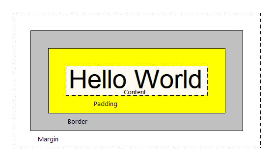

display: block, inline, inline-block, flex element de type block car il prend par default toute la taille de la page Le navigateur emploie les feuilles de style par defautlt mais on peut les modifier.
élément > padding > bordure > marge Width défini la largeur de l'élément, le padding et la bordure mais sans la marge. règle : box-sizing:paddin-box > ne pas prendre en compte le padding et la bordure avoir une Largeur stricte telle qu'on l'a demandé à la base.
box-sizing : border-box > pour s'affranchir des conditions de base du navigateur. 